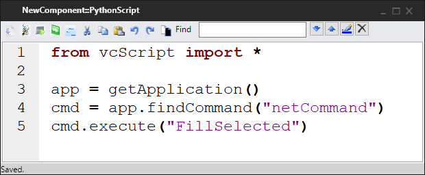
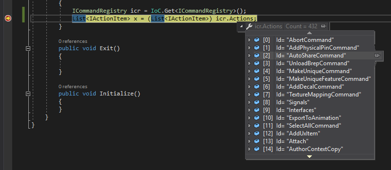
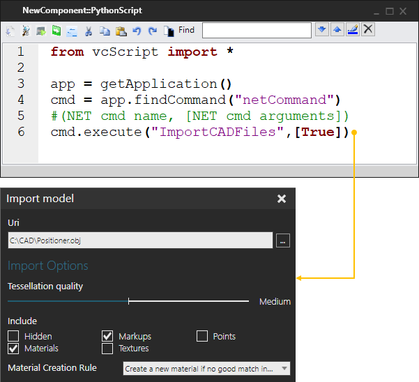

The netCommand allows you to call a command defined in .NET API and registered with your R-Pro product.

A .NET command is an IActionItem and stored in the main application's command registry, which is of type ICommandRegistry. You can access this registry to find out what commands you can call and the arguments you need to pass to execute each command. One approach is to create a simple plugin in Visual Studio for your R-Pro product (main application). From there, create a breakpoint that would allow you to inspect actions in the registry using Intellisense in Visual Studio.

Some .NET commands are executed using an action panel or task pane. In most cases, that would require passing command arguments when executing the netCommand.
